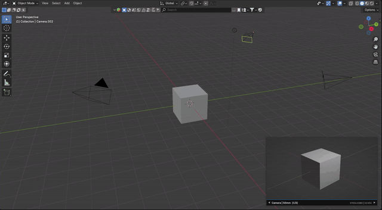
Preview overlay
Keep the camera feed visible directly inside the 3D View.
Blender 4.2+ add-on | Unreal Cam v0.4.2 BETA
Keep the final shot visible while you work. Unreal Cam adds a floating camera monitor to Blender's 3D View, so you can move through the scene, adjust lighting, switch cameras, and still see the frame you are building.
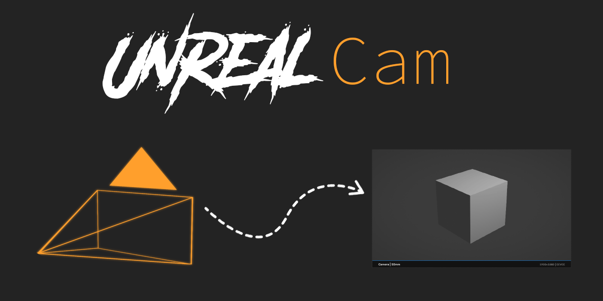
Work outside the camera without losing the shot.
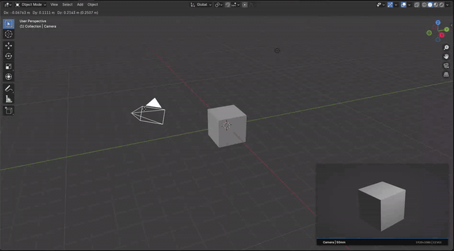
Keep composition visible while editing from any angle. No constant jumping back to camera view, no separate render window, no guessing.
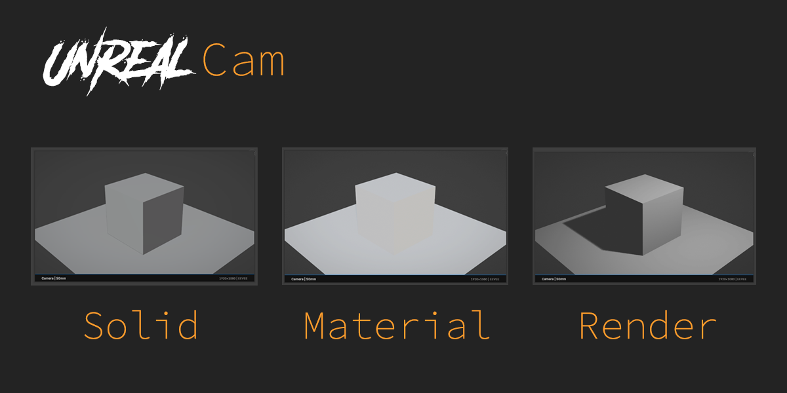
Short previews of the add-on in action.

Keep the camera feed visible directly inside the 3D View.
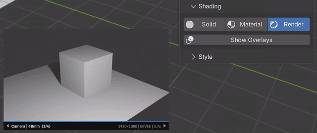
Switch between Solid, Material, Rendered, and viewport overlays.
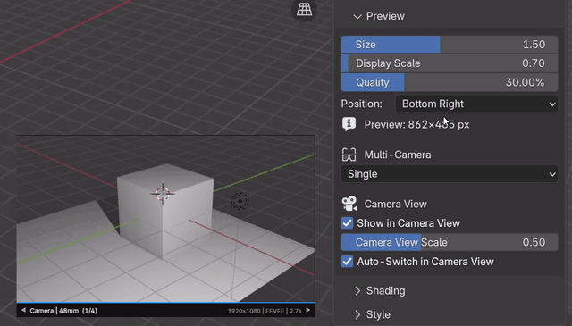
Control screen size and render cost separately for smoother work.
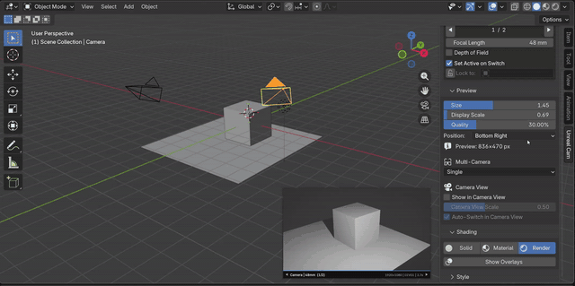
Move the monitor to the corner or custom position that fits your layout.
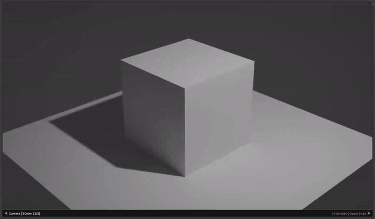
Review scene cameras quickly without breaking your viewport workflow.
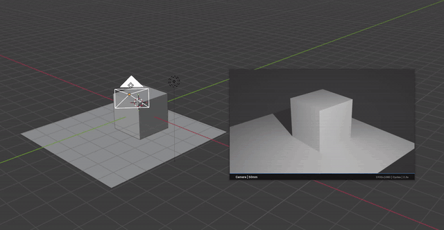
Check rendered lighting from the monitor with practical quality presets.
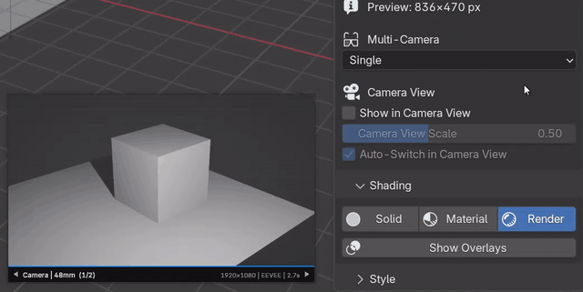
Compare two cameras side by side for faster framing decisions.
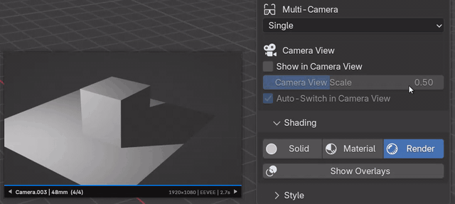
Review four shot options in a compact 2x2 camera board.
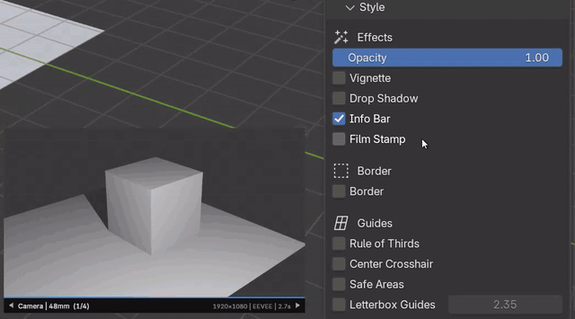
Add borders, guides, opacity, vignette, safe areas, and letterbox framing.
Registered in Blender's 3D View keymap when enabled.
The essentials before installing.
Install it as a Blender add-on, enable it, then open View3D > Sidebar > Unreal Cam.
Built for Windows x64, Linux x64, and macOS arm64.
$15 until June 30, 2026. Normal price is $25.
BETA build. Updates may include fixes and workflow improvements.